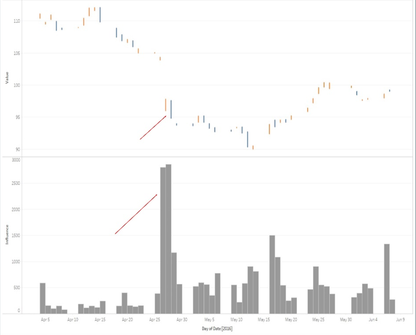
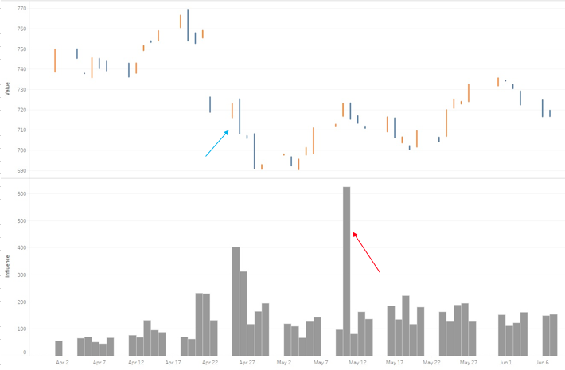

Analyzing the data, there were very interesting correlations found between stock market and social media. Stock market is unpredictable, but at the same time if one can predict one or two prices per year, it is an opportunity.
For testing and analyzing purposes Apple Inc. has been chosen to do analysis on. There were some interesting points in the graph found. Please see the graph representing the influence in social media and price of Apple Inc. of the following day.

As illustrated in Fig. 1, and pointed we red arrows there is one point were influence is comparably very high, but the price has not been changed much the day before. Instead the price has been dropped for almost 2.5 dollars next day. Which is what the project is looking to find. The reasons or topics is not very important, there is a fact twitter feed was active a day before stock market was influenced. Other than the day pointed with the red arrow, the stock market and social media has been acting naturally. When something happens in the stock market, twitter users react to the change.
It is always important to find cases were social media does not act before the price change, and for this purpose Google Inc. data has been evaluated. Please see stock price and the influence of twitter of Google Inc. in the following graph.

As illustrated in Fig. 2, there are no points in the graph that stock market has been changed dramatically. Both points where influence has been high comparably, stock market reacted before the social media.